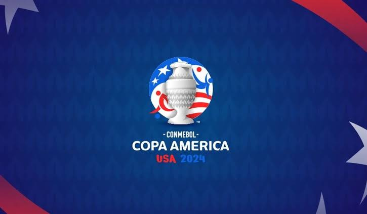
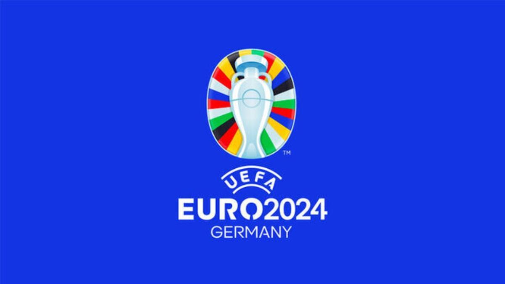

2027 UEFA Champions League Final
Will be played on June 5, 2027, at the Metropolitano Stadium in Madrid, Spain.
Will be played on June 5, 2027, at the Metropolitano Stadium in Madrid, Spain.
Projected to take place in the summer of that year (June-July), with Mexico strongly bidding to be the host.
Will be celebrated between June 8 and July 21, 2030. The main venues will be Spain, Portugal, and Morocco, with commemorative inaugural matches in Argentina, Uruguay, and Paraguay.
Held in the United States, Mexico, and Canada between June 11 and July 19, 2026, where Spain was crowned champion after defeating Argentina 1-0 in the final.

Held in the United States from June 20 to July 14, 2024, a tournament in which Argentina lifted the title after defeating Colombia in the decisive match.

Held in Germany simultaneously with the Copa América (from June 14 to July 14, 2024), where Spain defeated England to become the champion of Europe.
